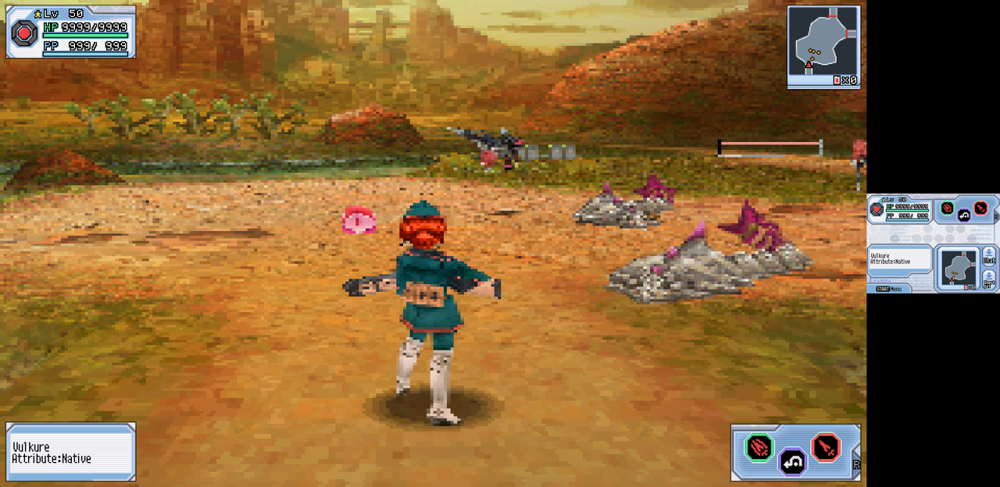
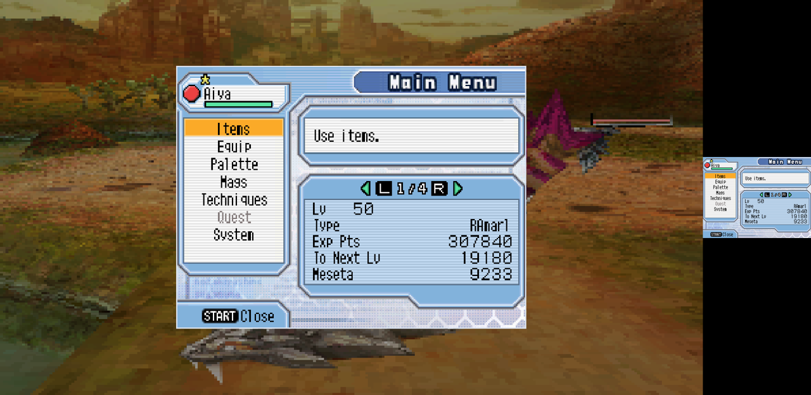
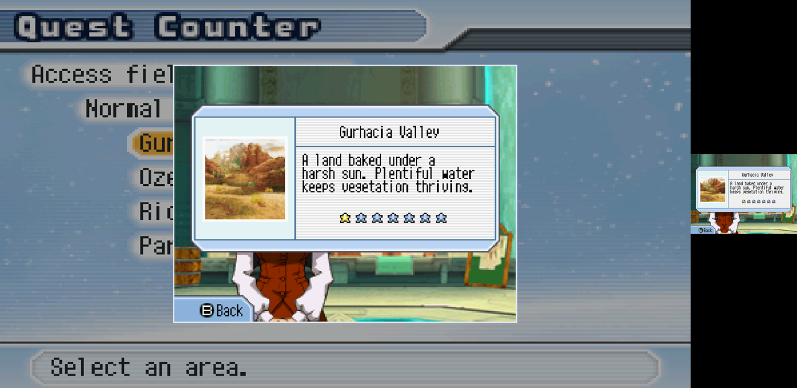
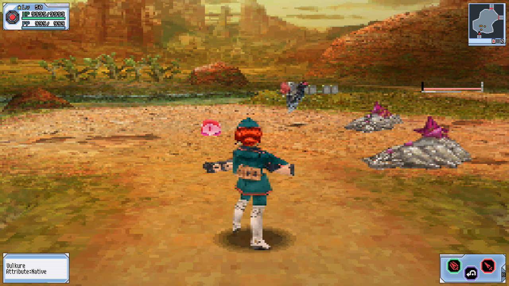
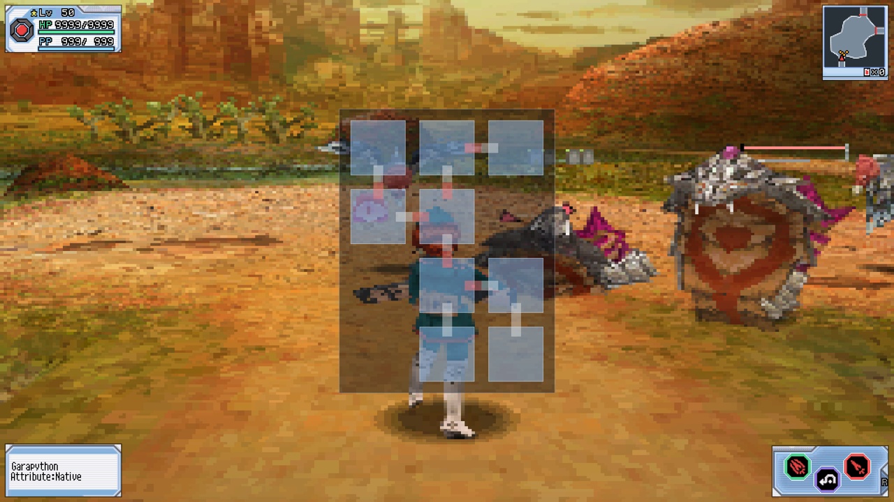
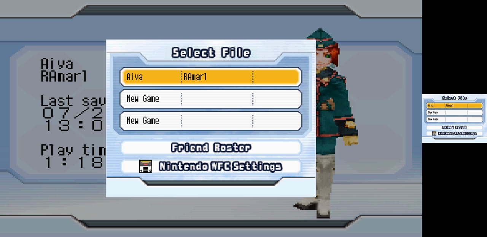
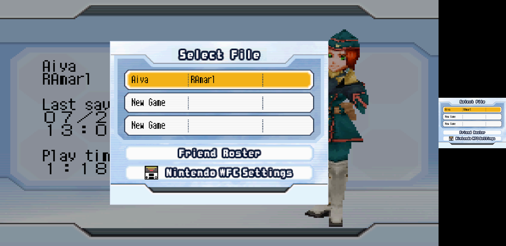
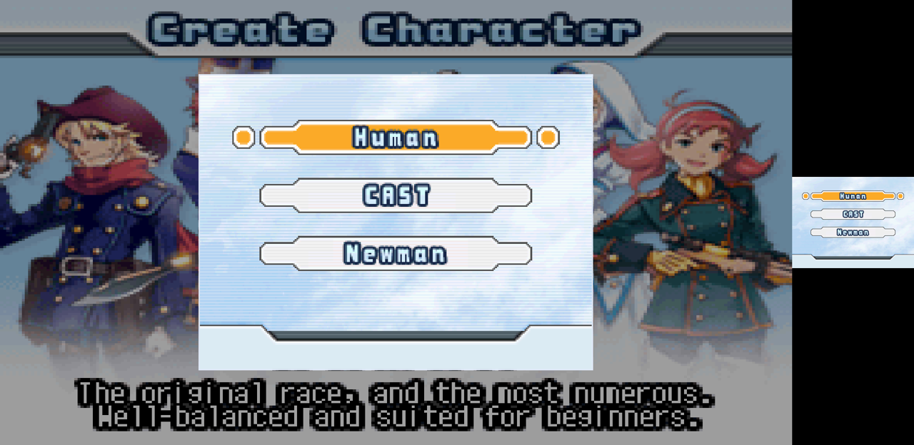

What the single-screen build is supposed to do in each state of the game, where every element on screen comes from, and how to tell a bug from a disagreement about intent.
Every screenshot below is a single frame in compare mode
(PSZ_COMPARE=1): the wide panel on the left is our output,
and the small panel on the right is the untouched source — the
bottom screen exactly as the game drew it. Nothing is edited between them.
That pairing is the whole verification method. Every ported element is a rectangle copied from the right-hand panel to the left one, so a mismatch is visible in one frame without needing a reference image or a second run.
Which state the build thinks it is in decides everything else, and it is decided by two reads. No overlay images, no heuristics.
| Test | Meaning |
|---|---|
| *(0x02108D04) == 0 | Not the main game. The player object pointer is null in every other mode — shops, quest counter, title, file select, character create. Present the bottom screen whole. |
| *(player + 0x280) == 5 | A full-screen menu is open inside the main game (main
menu, item menu, Mag). Present the bottom screen whole. Normal play
reads 1. |
| neither | Field or town. Composite the four corner elements over the top screen. |
| either of the above, but the bottom screen is nearly empty | Cutscene or dialogue. Draw nothing — let the top screen
through untouched. Emptiness is measured, not inferred: quantise the
bottom screen to RGB444, and if all but under 12%
(PSZ_MODAL_MIN_CONTENT) of sampled pixels are the single
commonest colour... superseded — see below. |

Expected: four elements in the four corners, the 3D view otherwise unobstructed, no dimming. Town behaves identically — the same rects are valid there, which was checked rather than assumed.
| Corner | Element | Source rect | Override | Notes |
|---|---|---|---|---|
| top-left | Player panel — level, HP, PP | 2, 4, 124×50 | PSZ_HUD_PANELRECT | the game's own art, not redrawn |
| top-right | Room minimap + key counter | 143, 109, 70×80 | PSZ_HUD_MAPRECT | includes the room outline, door markers, enemy dots, player arrow |
| bottom-left | Locked-on target | 2, 96, 124×56 | PSZ_HUD_TGTRECT | hidden when empty — see below |
| bottom-right | Action palette | 128, 6, 124×54 | PSZ_HUD_PALRECT | three action octagons and the R tab |
Source rects are in bottom-screen pixels (256×192). Elements are drawn at
PSZ_HUD_SCALE (default 2.0) in window pixels, not DS pixels
— so raising the output resolution gives them a smaller share of the screen
rather than scaling them up with it.
The game draws that box whether or not anything is locked on, and there is no flag for it. Emptiness is detected by counting dark pixels in the box interior: text is near-black, an empty panel is not. Expected: present with a name and attribute when something is targeted, entirely absent otherwise — confirmed both ways, in a field and in town.


ov12) — the same overlay hosts the shop.Expected: the corner elements disappear entirely; the bottom
screen is drawn centred at PSZ_MODAL_SCALE (default 0.66) over the
field dimmed by PSZ_MODAL_DIM (default 90/255).
Why 66% and not full-screen: these are split scenes. The top screen carries real content — the race description in character create, the "Select an area." prompt at the counter, the logo at the title — and covering it hides information the dual-screen original shows. The menu must be readable and the top screen must remain readable.

PSZ_TOPONLY=1, top screen
only, 16:9. This is the default layout — no configuration required.
PSZ_MAP_OPACITY), drawn from the game's room table rather than
copied from the screen.The area map is the one element that is reconstructed rather than copied, because the game's own area map is a full-screen touch-gated modal that only exists while open — there is nothing on screen to copy. Cells come from the room table; exits are stubs, and keyed or enemy-gated exits are drawn red.



*(0x02108D04) == 0 or *(player+0x280) == 5. That
conflates two different situations:
| # | State | Expected | Actual |
|---|---|---|---|
| 1 | Title | show the top screen's logo | logo dimmed and covered by the bottom screen's PRESS START / © SEGA |
| 2 | Cutscenes — the opening one before the title, and the one after character creation | show the top screen, where the cutscene plays | FIXED. Verified on the SEGA splash: the top screen now shows plain where the near-blank bottom screen used to cover it. |
| 3 | Dialogue | show the top screen, where the dialogue is drawn | Fix applied, not yet verified — it takes the same path as the cutscenes, but no savestate mid-dialogue exists to confirm it on. |
The first version measured colour variety — how much of the bottom screen is not its commonest colour — assuming a cutscene's bottom screen is close to a flat fill. Measured on a real opening cutscene, it is not:
| State | colour variety | dark text |
|---|---|---|
| opening cutscene | 0.82 | 0.010 |
| file select | 0.69 | 0.093 |
| character create | 0.64 | 0.168 |
The cutscene has the highest colour variety of the three — it is a
large pastel panel with faint patterning — so the first check called it dense and
presented it, which is the bug it was written to fix. What separates them is
dark text: real UI is near-black glyphs on light panels, and the
cutscene filler is low contrast throughout. Threshold 0.045, tunable with
PSZ_MODAL_MIN_TEXT.
The obvious test is whether the field HUD is present in the rects we are about to copy. It is the wrong test: opening the Start menu removes that HUD, so a menu would read as "not a UI" and be passed through — trading three bugs for a worse one.
Emptiness is the property the decision actually rests on. A menu is dense whether or not it contains the field HUD; a cutscene's bottom screen is close to a flat fill. That also leaves the check indifferent to which UI is on the bottom screen, so a menu nobody has catalogued still behaves correctly.
Neither available test separates the cases on its own:
ov04, the same overlay as ordinary play, so the mode is
identical and only the screen contents differ.The fix is therefore the resident overlay at 0x0211E640 for the
coarse mode — ov16/ov17/ov00/ov06
are top-screen states, ov11/ov12/ov14 are
bottom-screen ones — plus a bottom-screen density check to split dialogue from
menus within ov04. psz-re already established the overlay slot as the
game's own notion of mode; using it here means baking in a fingerprint per
overlay so the id can be recovered at runtime without the ROM's overlay images.
Worth recording that psz-re's own notes flagged this: the control-mode field was documented as verified for the main, item and Mag menus with dialogue and cutscenes untested. This is that untested case turning out to be the one it gets wrong.
| Address | Holds | Used for |
|---|---|---|
| *(0x02108D04) | player object pointer; null outside the main game | state detection |
| player + 0x280 | control mode: 1 normal, 5 full-screen menu | state detection |
| *(*(0x02108C64)) | room table base | area map |
| base + 0x410 | room count (valid range 1–20) | area map |
| record + 0x2E / +0x2F | grid cell, column and row | area map layout |
| record + 0x18..0x1B | exits, N E S W; 0xFF = wall | area map connections |
| record + 0x1C..0x1F | gate type; 0 = open, else keyed | red exit stubs |
| 0x020346E0 | 3D projection aspect term; 0x1555 → 0x1C71 | 16:9 widescreen |
| KeyInput bit 2 | SELECT, active low | area map toggle |
Records are 0x34 bytes. Every address above was checked against
every savestate on disk before being used, not read once and trusted.
| Thing | Why |
|---|---|
| "You are here" on the area map | blocked The current-room index has not been
found. +0x414 looked like it and is refuted:
it read 6 (a dead-end cell) while the game's own map showed the player in
room 0. Drawing a wrong marker is worse than none. Needs a savestate taken
in a second room — every one on disk has the player in room 0. |
| Party member panels | unverified No savestate on disk has a party, so the rect cannot be checked in-frame the way every other element was. |
| Hi-res 3D by default | Works, but only tested under software rasterisation — never on real GPU hardware or a handheld. |
Include the state name from this page, what you expected from it, and what you saw. If the two agree and the behaviour is still wrong, that is a spec change and should say so — those are the reports worth having, because they are the ones this page cannot answer on its own.
Source: github.com/kion-dgl/psz-melonmix. You supply your own ROM; nothing here contains game data and the ROM is never modified.